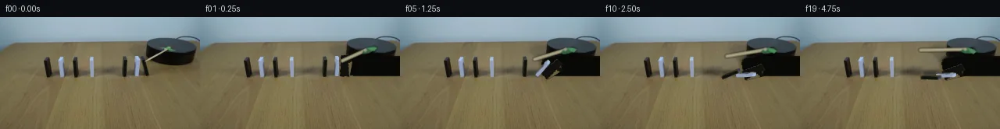

![首帧]()

Round 00
2026-11-06T06:11:20.473479+00:00像素候选变化代码 +211/−0inspection 更新
pixels 4f1e197a6ab17057 · code 8a5cb92a84e9d8f5
查看本轮 generate.py 真实 diff
--- previous/generate.py
+++ current/generate.py
@@ -0,0 +1,211 @@
+"""PixelWorld case_0050 generation.
+
+Two domino rows; rotating stick (clockwise) knocks the right-row dominoes;
+cascade travels left and stops at the gap. Frame 00 is the untouched
+first_frame.png; frames 01-19 are composited from an inpainted clean plate,
+photo sprites of the three right-row dominoes, analytic soft shadows and a
+procedural rotating stick/green-fletching assembly.
+"""
+from pathlib import Path
+import math
+import numpy as np
+import cv2
+from PIL import Image, ImageDraw, ImageFilter
+
+HERE = Path(__file__).resolve().parent
+DEBUG = True
+
+F0 = np.array(Image.open(HERE / 'first_frame.png').convert('RGB'))
+H, W = F0.shape[:2]
+
+# ---------------------------------------------------------------- geometry
+PIVOT = np.array([214.0, 41.0]) # stick rotation centre (green hub)
+STICK_R, STICK_F, A0 = 61.0, 0.30, math.radians(29.4)
+OMEGA = math.radians(3.0) # per frame (12 deg/s at 4 fps)
+SWEEP0 = 0.0
+
+PIV = { # base pivots of the three animated dominoes
+ 'D5': (156.0, 74.5),
+ 'D6': (174.5, 74.5),
+ 'D7': (184.5, 74.5),
+}
+D7_INIT = 12.0 # pre-lean at frame 00
+
+# keyframed lean angles (deg from vertical, falls toward -x)
+ANG = {
+ 'D7': [12, 22, 34, 47, 59, 70, 79, 85, 88, 88, 88, 88, 88, 88,
+ 88, 88, 88, 88, 88, 88],
+ 'D6': [0, 0, 0, 12, 26, 40, 52, 63, 72, 80, 86, 88, 88, 88,
+ 88, 88, 88, 88, 88, 88],
+ 'D5': [0, 0, 0, 0, 0, 0, 10, 24, 38, 52, 64, 74, 81, 86,
+ 88, 88, 88, 88, 88, 88],
+}
+
+# ------------------------------------------------------- 1. clean plate
+def build_plate_and_mask():
+ m = np.zeros((H, W), np.uint8)
+ cv2.rectangle(m, (149, 48), (163, 78), 255, -1) # D5
+ cv2.rectangle(m, (168, 47), (181, 78), 255, -1) # D6
+ cv2.fillPoly(m, [np.array([[176, 50], [184, 48], [190, 75],
+ [179, 76]], np.int32)], 255) # D7
+ cv2.line(m, (181, 57), (212, 42), 255, 4, cv2.LINE_AA) # stick
+ cv2.ellipse(m, (215, 40), (14, 7), -28, 0, 360, 255, -1, cv2.LINE_AA)
+ cv2.circle(m, (211, 42), 3, 255, -1, cv2.LINE_AA) # bolt
+ m = cv2.dilate(m, np.ones((3, 3), np.uint8), iterations=1)
+ plate = cv2.inpaint(F0, m, 4, cv2.INPAINT_NS)
+
+ # analytic repaint of the cylinder front face (left silhouette hidden
+ # behind D7/stick in the source)
+ layer = Image.new('RGBA', (W, H), (0, 0, 0, 0))
+ d = ImageDraw.Draw(layer)
+ face = [(198, 50), (186, 52), (182, 55), (181, 59), (182, 65),
+ (184, 70), (188, 74), (196, 75), (W, 75), (W, 50)]
+ d.polygon(face, fill=(8, 8, 6, 255))
+ d.line([(198, 50), (190, 51), (184, 53), (182, 56)],
+ fill=(34, 33, 29, 255), width=1) # rim edge
+ layer = layer.filter(ImageFilter.GaussianBlur(0.6))
+ base = Image.fromarray(plate).convert('RGBA')
+ base.alpha_composite(layer)
+ return np.array(base.convert('RGB')), m
+
+# ------------------------------------------------------- 2. sprites
+def extract_sprites(plate):
+ diff = np.abs(F0.astype(int) - plate.astype(int)).sum(2)
+ alpha = np.clip((diff - 22) / 50 * 255, 0, 255).astype(np.uint8)
+ win = {
+ 'D5': (148, 47, 164, 77),
+ 'D6': (167, 46, 180, 76),
+ 'D7': (174, 47, 192, 77),
+ }
+ out = {}
+ for k, (x0, y0, x1, y1) in win.items():
+ a = alpha[y0:y1, x0:x1].copy()
+ rgb = F0[y0:y1, x0:x1].copy()
+ if k == 'D6':
+ a[:, x1 - x0 - 2:] = 0 # strip D7 overlap columns
+ if k == 'D7':
+ a[:, :5] = 0 # x<179 belongs to D6/table
… diff truncated; 124 more lines …